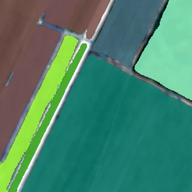
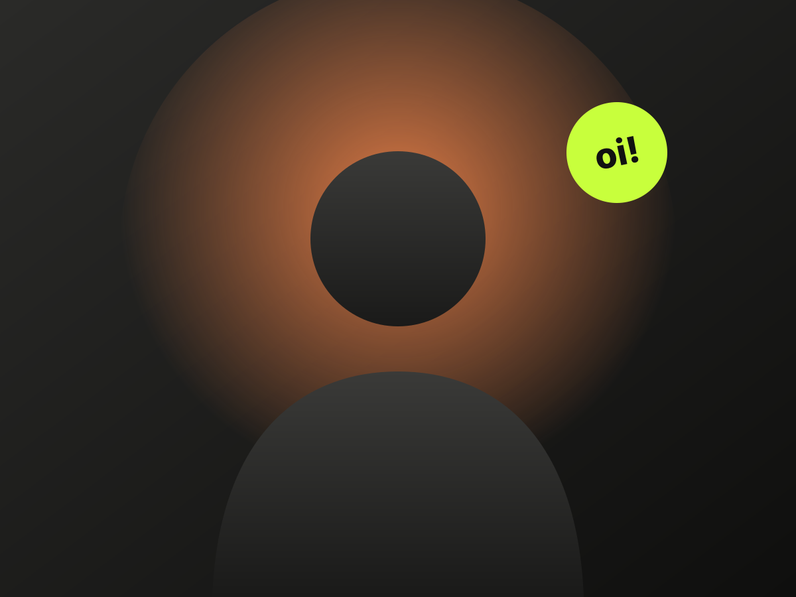

Visão computacional
Modelos que enxergam: segmentação, classificação e detecção em imagens de satélite, de lavoura e de linha de produção.
- PyTorch
- Segmentação
- Classificação
- Transfer learning
- OpenCV
- Sensoriamento remoto




Sobre mim
Desenvolvedor Python com formação em IA Aplicada pela PUCPR. Na IoTag, construo serviços que transformam a telemetria de máquinas agrícolas em dados úteis. Nos meus projetos, treino redes neurais que enxergam o campo — por satélite e por foto — e levo os modelos do notebook até a produção.

Serviços
Do dado bruto ao produto: treino modelos de visão computacional, construo as APIs que os servem e as interfaces que colocam o resultado na mão de quem decide no campo.
Modelos que enxergam: segmentação, classificação e detecção em imagens de satélite, de lavoura e de linha de produção.
Microsserviços em Python que recebem, decodificam e servem dados — da telemetria de máquinas agrícolas à inferência de modelos.

Levo o modelo do notebook até o usuário: API de inferência, interface web, exportação do modelo e testes automatizados.

Profissional em